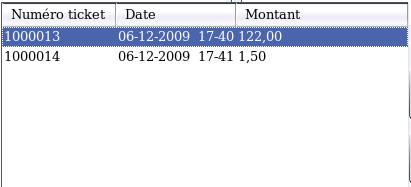

~ Laurux.Pos ~

~ Laurux.Pos ~ |
|
|
|
Mise en attente et rappel d'un ticket en attente.
La mise en attente d'un ticket en cours se fait par la touche F8.
Le rappel d'un ticket en attente se fait par la touche F9.

F9 ouvre la fenêtre de sélection des tickets en attente. Pour rappeler un ticket il suffit de cliquer sur la ligne souhaitée. Ensuite, on se retrouve dans la situation d'une saisie normale. Donc on peut ajouter des lignes, saisir le réglement ou supprimer le ticket.
NB: Le moulinage contrôle la présence de tickets en attente. Le moulinage est impossible si des tickets sont attente.
Valider la remise va fermer la fenêtre et générer deux lignes sur le ticket.
----------------------------------------------------------------------------------------------------------------------